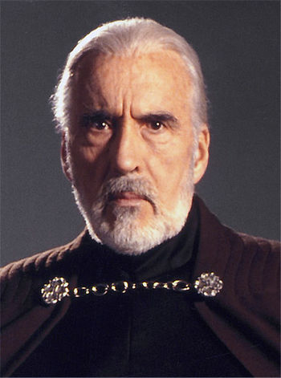

Star Wars
Guerra nas EstrelasStar Wars é uma franquia do tipo space opera estadunidense criada pelo cineasta George Lucas que conta com uma série de oito filmes de fantasia científica e dois spin-offs. O primeiro filme foi lançado apenas com o título Star Wars em 25 de maio de 1977, e tornou-se um fenômeno mundial inesperado de cultura popular, sendo responsável pelo início da "era dos blockbusters": Super produções cinematográficas que fazem sucesso nas bilheterias e viram franquias com brinquedos, jogos, livros, etc. Foi seguido por duas sequências, The Empire Strikes Back e Return of the Jedi, lançadas com intervalos de três anos, formando a trilogia original. Esta primeira trilogia segue o trio icônico: Luke Skywalker, Han Solo e Princesa Leia, que luta na Aliança Rebelde para derrubar o tirano Império Galáctico; paralelamente ocorre a jornada de Luke para se tornar um cavaleiro Jedi e a luta contra Darth Vader, um ex-Jedi que sucumbiu ao Lado Sombrio da Força e ao Imperador.
Depois de 16 anos sem filmes novos lançados, uma nova trilogia chamada de prequela começou em 1999 com The Phantom Menace. Esta volta no tempo para contar como Anakin Skywalker se transformou em Darth Vader e acompanha a queda da Ordem Jedi e da República Galáctica substituída pelo Império. Sendo também lançada com intervalos de três anos, com o último lançado em 2005. As reações à trilogia original foram extremamente positivas, enquanto a trilogia prequela recebeu reações mistas tanto da crítica especializada como do público. Mesmo assim, todos os filmes foram bem sucedidos nas bilheterias e receberam indicações ou ganharam prêmios no Óscar.
Em 2008 foi lançado o filme de animação Star Wars: The Clone Wars, um spin-off piloto para série de animação de mesmo título. Neste ano foi divulgado a soma da bilheteria arrecadada com os seis episódios existentes, que totalizava aproximadamente 4,41 bilhões de dólares. Após a estreia do episódio VII e Rogue One, este valor ultrapassou 7 bilhões, fazendo de Star Wars a terceira série cinematográfica com maior bilheteria da história, atrás dos filmes do Universo Cinematográfico Marvel e do Mundo Bruxo de J. K. Rowling. É a maior franquia da história do cinema, com a soma dos filmes e produtos equivalente a mais que 30 bilhões de dólares. Esta gerou diversos subprodutos, incluindo jogos eletrônicos, desenhos animados, livros e quadrinhos, o que resultou na criação do universo expandido da saga. Em 2012, a The Walt Disney Company comprou a Lucasfilm por 4,05 bilhões de dólares e anunciou uma nova trilogia de filmes, chamada de "trilogia sequela", uma sequência que continuará a saga da família Skywalker após Retorno de Jedi. Esta trilogia terá um intervalo de dois anos entre os filmes, e nesses intervalos, a Disney lançará spin-offs no universo expandido, que se passam durante os episódios das trilogias. O primeiro capítulo dessa fase, sob o título de The Force Awakens, estreou em 18 de dezembro de 2015,recebendo aclamação da crítica, e tornou-se a maior estreia da franquia. Seguido por, Rogue One, o primeiro spin-off lançado em 16 de dezembro de 2016.
O antigo universo expandido foi construído de modo não-canônico pela Lucasfilm em 2014, e seu material agora é lançado na Disney com o selo Legends, que tenta organizar o universo expandido, que contêm histórias contraditórias. Levando em consideração a nova trilogia, que conta uma história diferente do antigo canônico, a Disney considerou apenas os sete filmes e a série Clone Wars como canônico. O novo universo expandido entrou em vigor em 2014, com o primeiro produto oficial de Star Wars após a compra pela Disney, o Star Wars Rebels. Diferente do Legends, as histórias do novo universo expandido são supervisionadas pela Lucasfilm Story Group, fundado pela Kathleen Kennedy (presidente da Lucasfilm) com objetivo de manter a continuidade entre todos os produtos (filmes, livros, séries, quadrinhos e jogos) da franquia.
Personagens Principais
-

-

-

- 
Luke Skywalker
Luke Skywalker é o protagonista da trilogia original da série Star Wars. Um personagem essencial e importante na luta da Aliança Rebelde contra o Império Galáctico, é o irmão gêmeo da líder rebelde Princesa Leia Organa de Alderaan, foi amigo do mercenário Han Solo, aprendiz do Mestre Jedi Obi-Wan "Ben" Kenobi, e o filho do Jedi caído Darth Vader (Anakin Skywalker) e da Rainha de Naboo/Senadora da República Padmé Amidala.
Darth Vader
Darth Vader, nascido como Anakin Skywalker, é o protagonista da trilogia prequela e antagonista da trilogia original da série de filmes Star Wars (Guerra nas Estrelas), tendo participado de seis episódios (A Ameaça Fantasma, Ataque dos Clones, A Vingança dos Sith, Uma Nova Esperança, O Império Contra-Ataca e O Retorno de Jedi) e também participou do spin-off Rogue One. Suas principais características são a armadura preta e a ruidosa respiração mecânica. É constantemente citado na cultura pop como um dos personagens mais icônicos de todos os tempos. É um dos poucos personagens da saga que estiveram presentes e tiveram ao menos uma menção em todos os 8 episódios lançados até hoje.
Leia Organa
Leia é filha de Anakin Skywalker e Padmé Amidala, e irmã gêmea de Luke Skywalker. Assim que nasceu foi adotada em segredo por Bail Organa, membro da família real de Alderaan, para que fosse protegida das Forças Sombrias do Império Sith.
Han Solo
Han Solo é um mercenário, nativo do planeta Corellia, mas residente em Tatooine. É proprietário da nave espacial Millennium Falcon, antigo cargueiro corelliano, modificado por Solo, descrita por ele como "a nave mais veloz da galáxia" e tem como co-piloto o wookiee Chewbacca. Precisando de dinheiro urgente para pagar o credor Jabba the Hutt, Han aceita transportar Luke Skywalker e Obi-Wan Kenobi para o planeta Alderaan.
Chewbacca
Chewbacca nasceu em Kashyyyk 200 anos antes da Batalha de Yavin. Junto com outros wookiees ele combateu as forças de Palpatine (Darth Sidious) e do Império Galáctico, sendo o único sobrevivente de uma missão para salvar filhotes Wookiees de escravistas.
Mestre Yoda
Medindo 76 centímetros de altura, Yoda é um membro masculino de uma raça cujo nome nunca foi revelado. Ele foi o Grão Mestre da Ordem Jedi durante as Guerras Clônicas, um dos membros mais importantes do Alto Conselho Jedi nos últimos dias da República Galáctica, e um dos mais sábios e poderosos Jedi de todos os tempos. Tendo vivido por muito tempo (veio a falecer com aprox. 900 anos de idade), ele tinha excepcionais habilidades no combate de sabre de luz, onde usava as técnicas acrobáticas da Forma IV, além de um fenomenal conhecimento sobre a Força. De 300 ABY até 19 ABY ele treinou quase todos os Jedi da Galáxia — como Grande Mestre, ele instruia todos os Younglings do Templo Jedi antes deles serem adotados por um mestre, tendo Anakin Skywalker sido uma exceção quanto a isso.
Anakin Skywalker
Anakin Skywalker foi um Humano que serviu à República Galáctica como um Cavaleiro Jedi, e mais tarde ao Império Galáctico como o Lorde Sith Darth Vader. Considerado por muitos como nascido da própria Força, ele era filho de Shmi Skywalker e se mudou ainda pequeno para o planeta de Tatooine, onde ele e sua mãe foram escravos. Eles pertenciam a um vendedor de sucata Toydariano chamado Watto. Ainda criança, Anakin foi descoberto pelos Jedi Qui-Gon Jinn e Obi-Wan Kenobi, que libertaram Anakin da escravidão e trouxeram o jovem para dentro de sua comunidade. Dentre os Jedi, muitos acreditaram que o menino era o Escolhido da profecia, destinado a derrotar os Sith e trazer equilíbrio à Força.
Obi Wan Kenobi
Obi-Wan Kenobi, mais tarde conhecido também como Ben Kenobi durante seu exílio, foi um Humano Mestre Jedi que serviu à República Galáctica. Ele foi mentor de tanto de Anakin Skywalker
Qui-Gon Jinn
Qui-Gon Jinn foi um Humano Mestre Jedi nascido em Coruscant durante os últimas décadas da República Galáctica. Treinado por Conde Dookan, Jinn foi considerado um dissidente dentro da Ordem Jedi, já que nem sempre seguia o Código Jedi; de acordo com seu Padawan, Obi-Wan Kenobi, Jinn poderia ter sido um membro do Alto Conselho Jedi se ele seguisse o código. Nos anos anteriores à sua morte, Jinn começou a estudar os segredos de consciência eterna depois da morte, tendo ele sido um estudante por muito tempo da Força Viva.
R2-D2
R2-D2, também chamado simplesmente de R2, foi um droide astromecânico série R2 produzido pelas Indústrias Autômato com programação masculina. Um droide esperto que serviu a uma multidão de mestres, ele nunca teve sua memória apagada, o que resultou em uma personalidade aventureira e independente. Muitas vezes presente em momentos críticos da linha do tempo da história galáctica, sua bravura e ingenuidade salvaram a galáxia várias vezes.
C-3PO
C-3PO foi um droide de protocolo unidade 3PO projetado para interagir com organismos, programado primariamente para etiqueta e protocolo. Ele era fluente em mais de seis milhões de formas de comunicação e desenvolveu uma personalidade espalhafatosa e propensa à preocupação durante várias décadas de operação. Junto com seu parceiro, o droide astromecânico R2-D2, C-3PO constantemente se encontrava envolvido em momentos críticos da linha do tempo da história galáctica.
General Grievous
General Grievous, nascido Qymaen jai Sheelal, foi o líder das forças militares da Confederação de Sistemas Independentes e um inimigo da República. Apesar de ser um membro da espécie Kaleesh, seu corpo físico era uma fusão de uma poderosa estrutura robótica, um cérebro, sistemas nervosos, sensoriais orgânicos e eletrônicos.
Conde Dooku
Dookan foi um Mestre Jedi que caiu para o lado sombrio da Força e se tornou o Lorde Sombrio de Sith, conhecido como Darth Tyranus. Nascido no planeta Serenno, ele era o herdeiro do nobre título de Conde. Dookan foi levado pela Ordem Jedi quando criança e foi treinado por Thame Cerulian. Como um Cavaleiro Jedi, ele tomou Qui-Gon Jinn como seu primeiro Padawan (Sendo esse o seu melhor Padawan), e depois treinou Komari Vosa. Dookan era um instrutor respeitado no Templo Jedi e um dos mais renomados espadachins na galáxia. Somente os mestres Yoda e Mace Windu eram considerados no mesmo nível que ele.
Padmé Amidala
Padmé Amidala Naberrie, comumente conhecida como Padmé Amidala, foi uma humana política nascida em Naboo que se tornou uma voz de liderança por paz e diplomacia durante os anos finais da República Galáctica. Padmé emergiu como importante membra do Senado durante o período das Guerras Clônicas, aumentando sua proeminência galáctica após a invasão e ocupação de Naboo pela Federação de Comércio. Através de seu relacionamento secreto com o Cavaleiro Jedi Anakin Skywalker, ela tornou-se mãe do lendário Mestre Jedi Luke Skywalker e da Princesa Leia Organa de Alderaan, que mais tarde seguiria seus passos como um ícone de ideais democráticos da República. Amidala foi eleita Rainha de Naboo aos catorze anos, tendo sido obrigada não muito depois a lutar contra a invasão da Federação do Comércio. Sua determinação em libertar seu povo resultou na remoção de Finis Valorum da função de Chanceler Supremo e na eleição de Sheev Palpatine, Senador de Naboo, ao cargo. Logo após a conclusão de seus dois mandatos como rainha, ela continuou sua carreira na política, tornando-se a representante de Naboo no Senado Galáctico.
Rey
Rey era uma Humana catadora de sucata nativa de Jakku que descobriu ser sensível à Força durante sua busca ao lendário Mestre Jedi Luke Skywalker a fim de trazer uma nova esperança à galáxia à beira da guerra. Rey cresceu sozinha no mundo desértico de Jakku, esperando sua família retornar, até encontrar BB-8, droide que carregava informações sobre o paradeiro de Skywalker. Juntamente com Finn, um desertor da Primeira Ordem, Han Solo e Chewbacca, ela embarcou em uma jornada para entregar o mapa a Skywalker para General Leia Organa e para a Resistência. No caminho, ela descobriu o sabre de luz de Skywalker e sua sensibilidade à Força despertou. Logo depois, ela acabou sendo capturada por Kylo Ren, nascido Ben Solo, filho de Leia e Han, contra quem Rey duelou na Base Starkiller logo antes da Resistência destruir a superarma. Depois de chegar à base da Resistência em D'Qar, Leia deu a Rey a missão de encontrar Luke com base no mapa e apresentar a ele o seu antigo sabre de luz como um símbolo da única esperança da galáxia: a volta dos Jedi.
Finn
Finn foi um Humano do sexo masculino que serviu como Stormtrooper da Primeira Ordem, com a designação FN-2187 e conhecido por seus companheiros como Oito-Sete. Ele foi considerado um dos melhores Stormtroopers do grupo antes de se juntar à Resistência na luta contra a Primeira Ordem. Logo depois de deixar à Primeira Ordem, ele ganhou o nome de "Finn" como sugestão do piloto da Resistência Poe Dameron, baseado em sua designação stormtrooper FN, e antes disto nunca teve uma nome real. Depois de deixar à Primeira Ordem, ele empunhou brevemente o sabre de luz que uma vez pertenceu aos Jedi Luke e Anakin Skywalker. Durante a Batalha da Base Starkiller, ele usa esta arma para duelar com Kylo Ren mas ele foi rapidamente derrotado e ferido gravemente.
BB-8
BB-8 era uma Unidade BB astromecânica que operava cerca de 30 anos depois da Batalha de Endor. O droide estava operando em um ponto do planeta desértico de Jakku. Ele tinha uma cabeça redonda semelhante a de R2-D2, com a maior parte do corpo sendo uma bola que permite que ele role. BB-8 era todo branco com prata e laranja sobre seu corpo, e com um grande olho preto. O droide pertencia ao piloto da Resistência Poe Dameron, e assim foi capaz de caber no compartimento de droide de um Caça T-70 X-wing.
Kylo Ren
Kylo Ren, nascido Ben Solo, era um humano sensível à Força que era o mestre dos Cavaleiros de Ren e era um dos líderes da Primeira Ordem, sob o comando direto do Líder Supremo Snoke, aproximadamente trinta anos após a Batalha de Endor. Filho dos heróis Rebeldes Leia Organa e Han Solo, Ben foi treinado como aprendiz Jedi de seu tio Luke Skywalker, na sua nova Academia Jedi. Enretanto, Ben foi atraído pelo lado sombrio e se tornou obcecado por assumir o legado do seu avô, Darth Vader. Acreditando-se muito fraco como Jedi para atingir o nível de seu avô, Ben adentrou o lado sombrio, com forte influência do misterioso usuário da Força chamado Snoke. Tomando o nome Kylo Ren, Ben deixou a nova ordem Jedi do tio e matou todos os seus colegas aprendizes. Skywalker entrou em um exílio autoimposto e Kylo se tornou um dos Cavaleiros de Ren dentro da Primeira Ordem. Esses eventos devastaram seus pais, levando à separação de Han e Leia; Han voltou para sua carreira de contrabandista e Leia voltou para sua posição de liderança na antiga Aliança.
Filmes
- Episódio IV - Uma Nova Esperança
-
Guerra nas Estrelas (em inglês: Star Wars , mais tarde relançado como Star Wars: Episode IV - A New Hope, em português: Star Wars: Episódio IV - Uma Nova Esperança) é um filme épico/space opera norte-americano, o primeiro da saga homônima a ser lançado em 25 de maio de 1977, e o quarto na ordem cronológica da trama, escrito e dirigido por George Lucas. Conta a história do jovem fazendeiro Luke Skywalker (Mark Hamill), que, junto com o contrabandista Han Solo (Harrison Ford), envolve-se na Guerra Civil Galáctica entre o tirano Império Galáctico e a Aliança Rebelde após adquirir os Droids R2-D2 e C3PO. Aquele primeiro contém os planos da super arma do Império, Estrela da Morte, o qual a líder rebelde, Princesa Leia (Carrie Fisher), espera usar para destruir a super arma.
Foi a maior bilheteria de todos os tempos na época, arrecadando mais de US$ 775 milhões. A produção, que atualmente é a 88ª maior bilheteria da história, quando ajustada pela inflação é a segunda maior bilheteria na América do Norte e a terceira maior bilheteria no mundo. Entre os muitos prêmios que o filme recebeu, teve onze nomeações ao Óscar, vencendo sete; as indicações incluíram Melhor Filme, Melhor Diretor, Melhor Ator Coadjuvante para Alec Guinness e Melhor Roteiro Original. Star Wars é classificado como um dos melhores filmes de ficção científica já feito, e é considerado pelos críticos como o marco de início da "Era dos Blockbusters" (em que o cinema hollywoodiano passaria a cada vez mais a se voltar aos efeitos visuais, às grandes campanhas de marketing, ao merchandising, entre outras características), historiadores de cinema costumam afirmar que existe cinema "antes de Star Wars e depois de Star Wars".
O filme foi preservado no National Film Registry pela Biblioteca do Congresso no primeiro ano que era elegível por ser "culturalmente, esteticamente e historicamente significante". É considerado pelo American Film Institute (Instituto de Cinema Americano) um dos 100 melhores filmes do cinema americano.
O subtítulo Episódio IV: Uma Nova Esperança não constava originalmente; George Lucas nem acreditava que continuaria a história. O subtítulo foi acrescentado em 1981, depois do lançamento do episódio seguinte, O Império Contra-Ataca. George Lucas tem relançado o filme com mudanças significativas, na edição especial de 1997, no lançamento em DVD de 2004 e no lançamento em Blu-Ray de 2011. Essas versões contêm cenas modificadas, diálogo alterado, sequências reeditadas, trilhas sonoras remixadas e cenas acrescentadas, gerando controvérsia pela deturpação da obra original. - Episódio V - O Império Contra-Ataca
-
O Império Contra-Ataca (em inglês: The Empire Strikes Back ), posteriormente lançado como Star Wars: Episódio V - O Império Contra-Ataca ( em inglês: Star Wars: Episode V - The Empire Strikes Back ), é um filme épico/space opera norte-americano de 1980 dirigido por Irvin Kershner e escrito por Leigh Brackett e Lawrence Kasdan, com base na história de George Lucas, sendo o segundo filme da saga Star Wars a ser lançado, embora seja o quinto na ordem cronológica.
O filme é ambientado três anos depois de Guerra nas Estrelas. O Império Galáctico, sob a liderança do vilão Darth Vader e do misterioso Imperador, está em busca de Luke Skywalker e o resto da Aliança Rebelde. Enquanto Vader procura incansavelmente o pequeno grupo de amigos de Luke - Han Solo, Princesa Leia Organa e outros - através da galáxia, Luke estuda a Força sob o Mestre Yoda. Quando Vader captura os amigos de Luke, Luke deve decidir se vai completar seu treinamento e se tornar um Cavaleiro Jedi completo ou confrontar Vader e salvá-los.
The Empire Strikes Back foi lançado em 21 de maio de 1980 e inicialmente recebeu críticas mistas, mas desde então tem crescido em grande estima, tornando-se o filme mais aclamado pela crítica da saga Star Wars; hoje é amplamente considerado como um dos melhores filmes de todos os tempos. O filme arrecadou mais de 500 milhões de dólares nos cinemas mundiais, e contêm cenas e música (The Imperial March) facilmente reconhecidos na cultura popular. O subtítulo Episódio V estava presente já na abertura original, em 1980, mas ausente do material de divulgação, o que confundiu o público porque o filme anterior não recebeu nenhuma numeração. Em 1981, Star Wars (1977) foi relançado como Star Wars: Episode IV - A New Hope. O filme foi classificado na posição # 3 no Empire's 2008, uma lista dos 500 melhores filmes de todos os tempos. Tornou-se o filme de maior bilheteria de 1980 e, até o momento, ganhou mais de US $ 538 milhões em todo o mundo a partir de sua execução original e vários relançamentos. Quando ajustada pela inflação, é a segunda maior bilheteria de todos os tempos e a 13ª maior bilheteria da América do Norte. O filme foi seguido por Retorno de Jedi , que foi lançado em 1983.
Em 2010, o filme foi selecionado para preservação no National Film Registry pela Biblioteca do Congresso por ser "culturalmente, historicamente e esteticamente significante". - Episódio VI - O Retorno de Jedi
-
Star Wars: Episode VI - Return of the Jedi — lançado originalmente como Return of the Jedi — é um filme épico/space opera norte-americano de 1983, dirigido por Richard Marquand e escrito por Lawrence Kasdan e George Lucas, com base na história de Lucas, com Lucas como produtor executivo. Cronologicamente, é o sexto filme da saga Star Wars, e o primeiro a utilizar a tecnologia THX.
A história se passa aproximadamente um ano depois dos eventos de Star Wars Episode V: The Empire Strikes Back. O Império Galático, sob a supervisão militar do impiedoso Darth Vader, começou a construção de uma segunda Estrela da Morte, visando aniquilar a Aliança Rebelde. Como o Imperador Palpatine, também conhecido como Darth Sidious, planeja supervisionar pessoalmente as etapas finais de sua construção, a Frota Rebelde dá início a um ataque em grande escala à Estrela da Morte, para evitar o término de sua construção e matar Palpatine, pondo efetivamente um fim ao Império. Neste meio tempo, Luke Skywalker, um líder rebelde e cavaleiro jedi, luta para resgatar Vader, um ex-jedi que também é seu pai, de volta do Lado Sombrio da Força.
David Lynch e David Cronenberg foram considerados para dirigir o projeto, antes de Marquand assinar como diretor. A equipe de produção se baseou nos storyboards de Lucas durante a pré-produção; enquanto escreviam o roteiro, Lucas, Kasdan, Marquand e o produtor Howard Kazanjian passaram duas semanas em reuniões, discutindo ideias para a sua construção. A agenda de Kazanjian adiou as filmagens em algumas semanas, para permitir à Industrial Light & Magic que trabalhasse os efeitos especiais do filme na pós-produção. As filmagens ocorreram na Inglaterra, Califórnia e Arizona, de janeiro a março de 1982, e Lucas esteve em comando dos trabalhos da segunda unidade. A produção do filme foi envolta em segredo, e recebeu o título de Blue Harvest (literalmente "Colheita Azul"), para evitar especulações sobre seus custos.
O filme foi lançado nos cinemas em 25 de maio de 1983, recebendo críticas positivas em sua maior parte. Espectadores, no entanto, consideraram o filme num patamar levemente abaixo do que os anteriores. Obteve mais de 475 milhões de dólares ao redor do mundo, e diversos lançamentos em vídeo e no cinema foram feitos durante os 20 anos seguintes. A série Star Wars continuou com Star Wars Episode I: The Phantom Menace, dando início a trilogia prequela. O subtítulo Episódio VI estava presente na abertura original de 83, mas ausente do material de divulgação, como aconteceu com O Império Contra-Ataca.
O título do filme deveria ser Revenge of the Jedi (A Vingança dos Jedi), mas um pouco antes da estreia George Lucas retornou à ideia inicial adotando o nome conhecido até hoje – e que significa, mais exatamente, O Retorno dos (Cavaleiros) Jedi. O motivo para tal decisão seria o de que um jedi nunca se vingaria, a não ser que quisesse passar para o Lado Sombrio da Força. A vantagem é que esta decisão eliminou o conflito que poderia vir com o título (corretamente traduzido) do terceiro filme da série cronológica, Star Wars Episódio III: A Vingança dos Sith. - Episódio I – A Ameaça Fantasma
-
Star Wars: Episódio I – A Ameaça Fantasma (em inglês: Star Wars: Episode I – The Phantom Menace ) é um filme épico de space opera estadunidense, pertencente a série de filmes Star Wars, lançado em 1999, dirigido e escrito por George Lucas. É o primeiro filme da trilogia prequela e o quarto da série rodado, embora o primeiro em ordem cronológica. Foi estrelado por Liam Neeson, Ewan McGregor, Natalie Portman, Jake Lloyd, Ian McDiarmid, Anthony Daniels, Kenny Baker, Pernilla August e Frank Oz.
Ameaça Fantasma ocorre cerca de 32 anos antes do filme original, e segue o Mestre Jedi Qui-Gon Jinn e seu padawan Obi-Wan Kenobi, como protetores da Rainha Amidala, na esperança de conseguir um fim pacífico para uma disputa comercial interplanetária de grande escala. Em sua jornada juntam-se a eles Anakin Skywalker—um jovem escravo com forte conexão com a Força—simultaneamente com o retorno dos misteriosos Sith.
Lucas começou a produção deste filme depois de considerar que os efeitos especiais tinham avançado suficiente para ele produzir uma nova trilogia da série. As filmagens começaram em 26 de junho de 1997, em locais como o Leavesden Film Studios e o deserto da Tunísia. Os efeitos visuais incluíram o uso extensivo do até então novo imagens geradas por computador (CGI). Ameaça Fantasma foi o primeiro trabalho de direção do Lucas após um hiato de 22 anos desde Star Wars em 1977.
A Ameaça Fantasma foi lançado nos cinemas em 19 de maio de 1999, dezesseis anos desde a última estreia de um filme da franquia, Return of the Jedi. A estreia do filme recebeu ampla cobertura da imprensa e alta antecipação, por causa do largo impacto cultural que a saga Star Wars tem cultivado. Recebeu críticas medianas dos especialistas, que tendiam a elogiar o visual, sequências de ação, trilha sonora de John Williams e performances de Liam Neeson, Ewan McGregor, Pernilla August, Ray Park e Ian McDiarmid, mas criticaram o roteiro e direção de elenco (particularmente de Ahmed Best e Jake Lloyd). Arrecadou 924,3 milhões de dólares ao redor do mundo em sua estreia, tornando-se na época a segunda maior bilheteria de todos os tempos, atrás apenas de Titanic. Foi a maior bilheteria de 1999, a maior bilheteria de um filme de Star Wars (até o lançamento de Star Wars: O Despertar da Força em 2015), e é atualmente a 32º maior bilheteria de todos os tempos. O relançamento em 3D em fevereiro de 2012, adicionou US$ 102,7 milhões em sua receita, chegando a US$ 1 bilhão mundialmente. O filme foi seguido pelas continuações, Star Wars: Episódio II – Ataque dos Clones em 2002 e Star Wars: Episódio III – A Vingança dos Sith em 2005. - Episódio II – Ataque dos Clones
-
Star Wars: Episódio II – Ataque dos Clones (em inglês: Star Wars: Episode II – Attack of the Clones ) é uma space opera épica americana, pertencente a série de filmes Star Wars, lançado em 2002, dirigido por George Lucas e com roteiro de Lucas e Jonathan Hales. É o segundo filme da trilogia prequela de Star Wars, estrelado por Ewan McGregor, Natalie Portman, Hayden Christensen, Ian McDiarmid, Samuel L. Jackson, Christopher Lee, Temuera Morrison, Anthony Daniels, Kenny Baker, e Frank Oz.
O filme ocorre 10 anos após os acontecimentos de Star Wars Episódio I: A Ameaça Fantasma. A galáxia está à beira de uma guerra civil. Liderado por um ex-Jedi chamado Conde Dooku, milhares de sistemas planetários ameaçam deixar a República Galáctica. Após a senadora Padmé Amidala escapar de uma tentativa de assassinato, Anakin Skywalker, um aprendiz Jedi, se torna seu protetor, enquanto seu mestre Obi-Wan Kenobi, investiga o atentado contra a vida dela. Logo Anakin, Padmé, e Obi-Wan testemunham o início de uma nova ameaça à galáxia, as Guerras Clônicas.
O desenvolvimento de Ataque dos Clones começou em março de 2000, após o lançamento de A Ameaça Fantasma. Em junho de 2000, Lucas e Hales completaram o rascunho do roteiro e a fotografia principal ocorreu de junho a setembro de 2000, principalmente no Fox Studios Australia em Sydney, Austrália, com cenas adicionais filmadas na Tunísia, Espanha e Itália. Foi um dos primeiros longa-metragens filmados totalmente em um sistema de alta definição digital em 24 quadros.
Ataque dos Clones estreou mundialmente em 16 de maio de 2002. Os críticos elogiaram os efeitos visuais, figurinos, trilha sonora, sequências de ação e performance de Ewan McGregor como Obi-Wan Kenobi, mas criticaram o romance de Anakin e Padmé, os diálogos, a maioria das atuações e o ritmo do filme. Ataque dos Clones arrecadou mais de US$ 649 milhões, tornando-se um sucesso financeiro. No entanto, foi o primeiro filme de Star Wars a não ficar em primeiro lugar no ano de lançamento, ocupando o terceiro lugar no mercado interno e o quarto internacionalmente. Foi seguido por Star Wars Episódio III: A Vingança dos Sith em 2005, concluindo a trilogia prequela. - Episódio III – A Vingança dos Sith
-
Star Wars: Episódio III – A Vingança dos Sith (em inglês: Star Wars: Episode III – Revenge of the Sith ) é um filme americano de space opera épica, o sexto filme da série Star Wars a ser rodado e o terceiro em ordem cronológica, lançado em 2005. A terceira e última parte da trilogia prequela de Star Wars, foi dirigido e escrito por George Lucas, e estrelado por Ewan McGregor, Natalie Portman, Hayden Christensen, Ian McDiarmid, Samuel L. Jackson, Christopher Lee, Anthony Daniels, Kenny Baker e Frank Oz.
O filme começa três anos após o início das Guerras Clônicas. Os Cavaleiros Jedi estão espalhados por toda a galáxia, liderando uma guerra maciça contra os Separatistas. O Conselho Jedi incumbe o Mestre Jedi Obi-Wan Kenobi de eliminar o notório General Grievous, líder do Exército Separatista. Enquanto isto, o Cavaleiro Jedi Anakin Skywalker se aproxima de Palpatine, o Supremo Chanceler da República Galáctica e, desconhecido do público, um Lord Sith. Sua amizade aprofundada ameaça a Ordem Jedi, a República, e o próprio Anakin.
Lucas começou a escrever o roteiro antes da produção de Star Wars: Episódio II – O Ataque dos Clones terminar. As filmagens de A Vingança dos Sith começaram em setembro de 2003, principalmente na Austrália, com locações adicionais na Tailândia, Suíça, China, Itália e Reino Unido. A Vingança dos Sith estreou em 15 de maio de 2005, no Festival de Cinema de Cannes, em seguida, foi lançado mundialmente em 19 de maio de 2005. O filme recebeu avaliações positivas dos críticos, especialmente em contraste com as críticas menos favoráveis das prequelas anteriores, recebendo elogios pelo seu enredo, visual, cenas de ação, trilha sonora de John Williams, efeitos visuais, e performances de Ewan McGregor, Ian McDiarmid, Frank Oz, Jimmy Smits e Samuel L. Jackson. É o último filme da franquia Star Wars a ser distribuído pela 20th Century Fox antes da aquisição da Lucasfilm pela The Walt Disney Company em 2012.
A Vingança dos Sith quebrou vários recordes de bilheteria durante sua semana de abertura e arrecadou US$ 848 milhões mundialmente, sendo a terceira maior bilheteria da franquia Star Wars, não ajustado pela inflação. Foi o filme de maior bilheteria de 2005 nos Estados Unidos e a segunda maior bilheteria do mundo no ano atrás de Harry Potter e o Cálice de Fogo. A saga Star Wars continuou com o lançamento de Star Wars: O Despertar da Força em 2015, a primeira parte da trilogia sequela, cujos eventos ocorrem após Star Wars: Episódio VI – O Retorno de Jedi. - Episódio VII - O Despertar da Força
-
Star Wars: Episódio VII – O Despertar da Força (no original em inglês: Star Wars: Episode VII - The Force Awakens ) é uma space opera épica estadunidense de aventura, fantasia e ficção científica de 2015, dirigida por J. J. Abrams, que também contribuiu com o roteiro ao lado de Lawrence Kasdan,[7] sendo o sétimo filme da série e da ordem cronológica Star Wars, além de ser o primeiro da trilogia sequela. Abrams ainda fez parte da equipe de produção com Bryan Burk e Kathleen Kennedy, presidente da Lucasfilm Ltd. e responsável pelos filmes da franquia. O elenco principal inclui Daisy Ridley, John Boyega, Adam Driver, Oscar Isaac, Andy Serkis, Domhnall Gleeson, e Max von Sydow, com Harrison Ford, Mark Hamill, Carrie Fisher, Anthony Daniels, Kenny Baker e Peter Mayhew reprisando seus papéis dos filmes anteriores.
O Despertar da Força se passa aproximadamente trinta anos após os acontecimentos de Return of the Jedi, e acompanha a jornada de Rey, que acaba encontrando um droide, BB-8, com informações do paradeiro de Luke Skywalker que está desaparecido. Ela é acompanhada por Finn, um stormtrooper desertor da Primeira Ordem, uma organização que quer reaver o Império Galáctico e luta contra a Resistência, comandada por Leia Organa. A aventura inesperada leva Rey a descobrir sua forte conexão com a Força e enfrentar o Lado Negro.
A trilogia sequela de Star Wars era especulada desde os anos 80. Mas apesar de George Lucas ter escrito esboços sobre, ele negou que iria fazer uma nova trilogia após ter escrito e produzido os três filmes que narram a história de Anakin Skywalker. Em 2012, Lucas vendeu a Lucasfilm para a The Walt Disney Company, que optou por criar uma nova história ao invés de seguir os esboços de Lucas. Michael Arndt fez o tratamento original da história, mais tarde reescrito por Lawrence Kasdan e J. J. Abrams, também diretor e co-produtor da produção.
Star Wars: O Despertar da Força foi amplamente aguardado, com a Disney promovendo o filme com várias campanhas de marketing. Teve a sua pré-estreia mundial em 14 de dezembro de 2015 em Los Angeles, quatro dias antes do lançamento oficial nos Estados Unidos. Foi aclamado pela crítica especializada e pelo público, que destacaram a importância dos personagens na narrativa, o enredo, a direção, a trilha sonora, os efeitos visuais, as sequências de ação e as performances do elenco, em particular Ridley, Boyega, Ford e Driver. Porém, também foi criticado por ser derivado da trilogia original. Tornou-se a maior estreia da história, com 529 milhões de dólares arrecadados no primeiro fim de semana em todo o mundo. Em apenas 12 dias, alcançou 1 bilhão de dólares, o terceiro filme mais rápido da história a chegar a este valor. É a maior receita de 2015, a maior arrecadação da franquia Star Wars e a quarta maior bilheteria de todos os tempos, sem ajuste pela inflação. Também detém o recorde de terceira maior abertura da história nos Estados Unidos e Canadá, registrando US$ 247,9 milhões.
O Despertar da Força obteve cinco indicações ao Oscar 2016 nas categorias de Melhor Trilha Sonora, Melhor Edição de Som, Melhor Mixagem de Som, Melhor Edição e Melhores Efeitos Visuais. - Rogue One: Uma História Star Wars
-
Rogue One: A Star Wars Story (no Brasil, Rogue One: Uma História Star Wars; em Portugal, Rogue One: Uma História de Star Wars) é um space opera épica estadunidense de ação, aventura, fantasia e ficção científica de 2016, de Gareth Edwards e escrito por Chris Weitz, sendo um derivado da franquia Star Wars, de George Lucas. O filme, que faz parte de uma nova série de spin-offs produzidos pela Lucasfilm e distribuídos mundialmente pela Walt Disney Studios Motion Pictures com base na série de filmes, teve seus efeitos especiais produzidos pela Industrial Light & Magic.
A narrativa de Rogue One: A Star Wars Story é estabelecida entre os acontecimentos de A Vingança dos Sith e Uma Nova Esperança. A história do filme se baseia em um grupo de combatentes da Aliança Rebelde se unindo para uma missão de roubar os planos da Estrela da Morte.
A fotografia principal teve inicio em Elstree Studios, no Reino Unido, durante o início de agosto de 2015 e terminou em fevereiro de 2016, com regravações e filmagens adicionais ocorrendo em meados de junho de 2016. Rogue One teve sua estreia em Los Angeles no dia 10 de dezembro de 2016, estreando nos cinemas em 15 de dezembro de 2016.
Seu primeiro fim de semana obteve US$ 290 milhões. O filme recebeu críticas geralmente positivas, com elogios as performances do elenco, cenas de ação, o tom mais sombrio, efeitos visuais, fotografia e a trilha sonora de Michael Giacchino. Em 22 de janeiro de 2017, o filme passou a marca de US$ 1 bilhão em bilheteria. Foi um dos filmes de maior bilheteria nos Estados Unidos e Canadá com pouco mais de US$ 532 milhões. Mundialmente, conquistou a segunda colocação entre os filmes mais rentáveis de 2016, ficando atrás apenas de Captain America: Civil War.
Rogue One: A Star Wars Story teve duas indicações ao Oscar 2017, nas categorias de Melhor Mixagem de Som e Melhores Efeitos Visuais. - Episódio VIII - Os Últimos Jedi
-
Star Wars: Episódio VIII – Os Últimos Jedi (em inglês: Star Wars: The Last Jedi ) é uma space opera épica estadunidense de 2017, escrita e dirigida por Rian Johnson, sendo o oitavo filme da franquia Star Wars e a sequência de Star Wars: O Despertar da Força, de 2015. Segundo filme da trilogia sequela, produzido pela Lucasfilm Ltd. e distribuído pela Walt Disney Studios Motion Pictures, é também o terceiro título da saga Star Wars de Kathleen Kennedy, após se tornar presidente da Lucasfilm e gerente de marca da franquia. Ram Bergman desempenhou o papel de produtor ao lado de Kathleen.
Em junho de 2014, foi confirmado que Rian Johnson iria escrever e dirigir o oitavo episódio da franquia, e também escrever o tratamento do Star Wars: The Rise of Skywalker. Daisy Ridley, Mark Hamill, John Boyega, Oscar Isaac, e demais membros do elenco estarão de volta em seus papéis anteriores, com inclusão de novos membros ao elenco: Benicio del Toro, Laura Dern, e Kelly Marie Tran. As filmagens tiveram início em fevereiro de 2016 e terminaram em julho do mesmo ano.
A pré-estreia de Star Wars: Os Últimos Jedi ocorreu em 9 de dezembro de 2017 no Shrine Auditorium, em Los Angeles. No Brasil, foi lançado no dia 14 de dezembro de 2017, chegando no dia seguinte em Portugal. Estreou nos Estados Unidos em dia 15 de dezembro 2017 nos formatos convencional, 3D e IMAX 3D. Foi aclamado pela crítica especializada, que o considerou o melhor filme da saga desde O Império Contra-Ataca, de 1980. O enredo, as atuações, as sequências de ação, os efeitos visuais, a trilha sonora e o peso emocional apresentado na narrativa foram os pontos destacados. Em contrapartida, foi recebido de forma negativa pelo público. No site agregador Rotten Tomatoes, obteve a nota mais baixa de todos os filmes Star Wars entre os espectadores com 44% de aprovação. Arrecadou mais de US$ 1,3 bilhão mundialmente, sendo a maior bilheteria doméstica do ano e o longa-metragem mais rentável em 2017. Em sua abertura no mercado interno, Estados Unidos e Canadá, registrou a terceira maior receita da história ao atingir US$ 220 milhões, ficando atrás apenas de Avengers: Infinity War, que fizera US$ 257,7 milhões em 2018, e Star Wars: O Despertar da Força, que totalizou US$ 247,9 milhões em 2015, sendo a segunda melhor marca da franquia Star Wars. É a sexta maior abertura mundial da história com US$ 450,8 milhões. Com US$ 241,6 milhões nos quatro primeiros dias de exibição nos Estados Unidos e Canadá, conquistou a quarta maior abertura de todos os tempos atrás de Star Wars: O Despertar da Força, que somou US$ 288 milhões em 2015, Avengers: Infinity War, que atingira US$ 282,4 milhões em 2018, e Black Panther, que registrou 242,1 em 2018. Mantém a oitava posição entre as maiores bilheterias da história no mercado interno, sendo superado por Star Wars: O Despertar da Força, Avatar, Black Panther, Titanic, Avengers: Infinity War, Jurassic World e Marvel's The Avengers. Atualmente, é a décima segunda maior bilheteria de todos os tempos. Recebeu duas indicações ao 71.º British Academy Film Awards, concorrendo nas categorias de Melhor Som e Melhores Efeitos Visuais, e quatro na 90.ª cerimônia do Oscar, incluindo Melhor Trilha Sonora pelas composições de John Williams, além de ser indicado para Melhor Edição de Som, Melhor Mixagem de Som e Melhores Efeitos Visuais.
A sequência e última parcela da trilogia sequela, intitulada Star Wars: The Rise of Skywalker, está programada para estrear em 20 de dezembro de 2019. - Episódio IX – A Ascensão Skywalker
-
Star Wars: The Rise of Skywalker (no Brasil, Star Wars: Episódio IX – A Ascensão Skywalker; em Portugal, Star Wars: Episódio IX – A Ascensão de Skywalker), também conhecido como Star Wars: Episode IX – The Rise of Skywalker, é uma futura space opera épica estadunidense de 2019, escrito por J. J. Abrams em colaboração com Chris Terrio e dirigido por Abrams, sendo o nono filme da franquia Star Wars, a sequência de Star Wars: Os Últimos Jedi, de 2017, e a terceira e última parcela da trilogia sequela, além do último filme da saga como um todo. Produzida pela Lucasfilm Ltd. e Bad Robot Productions e distribuído pela Walt Disney Studios Motion Pictures, é estrelado por Daisy Ridley, Adam Driver, John Boyega, Oscar Isaac, Lupita Nyong'o, Domhnall Gleeson, Kelly Marie Tran, Joonas Suotamo, Billie Lourd, Naomi Ackie, Richard E. Grant, Keri Russell, Mark Hamill, Anthony Daniels, Billy Dee Williams, Carrie Fisher e Ian McDiarmid.
Star Wars: The Rise of Skywalker está programado para estrear nos Estados Unidos em 20 de dezembro de 2019. No Brasil e em Portugal, a estreia está prevista para o dia 19 de dezembro de 2019.